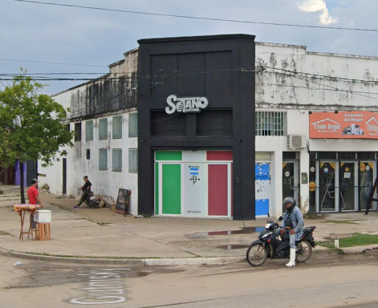

Av. Dr. Luis Gutnisky 4306, P3600CNC Formosa, Argentina
El Sótano Cultural se encuentra ubicado en la ciudad de Formosa Capital, específicamente en el barrio Villa del Rosario. Se sitúa sobre la Avenida Gutnisky al 4300, una de las arterias principales de la ciudad, en la intersección aproximada con la calle Martín Rodríguez.

En este mapa embebido (cortesía de Google Maps) podemos observar la cantidad aproximada de kilometros si nos dirigieramos desde la Plaza Gral San Martín hasta el establecimiento del Sótano Cultural por la Avenida Gutnisky. 5.5 km aprox. 13 minutos en auto, 15 min en bicicleta y casi 1 hora caminando.